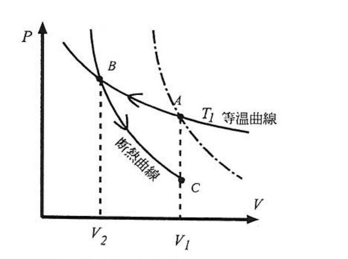
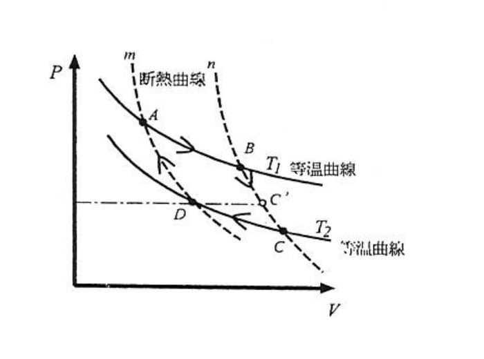

2008年度期末試験
ある気体について、実験によって次の性質がわかっている。
(a) 圧力 $P$ と体積 $V$ の積は温度 $T$ のみの関数 $f(T)$ を用いて、$PV=f(T)$ と表される。
(b) 内部エネルギー $U(T,V)$ は体積 $V$ に依存せず、温度のみの関数で表される。
(a)(b)は理想気体（$PV=nRT$，$U=U(T)$）が満たす性質そのものだが、ここではまだ $f(T)$ が具体的に $nRT$ であるとは仮定していない——(1)〜(9)は $f(T)$ の中身を一切使わずに一般論として解ける設問であり、最後の(10)で初めて、この2つの事実だけから $f(T)\propto T$（すなわちこの気体は理想気体と数学的に同じもの）でしかありえないことが導かれる、という構成になっている。
一般に、定積熱容量 $C_V$ は、内部エネルギー $U$ を用いて、$C_V=\pd{U}{T}{V}$ と表せることを説明せよ。
熱力学第一法則 $dU=δQ+δW$ に、準静的な仕事 $δW=-PdV$ を代入すると $δQ=dU+PdV$。体積一定の変化（$dV=0$）に限れば
定積熱容量は定義から $C_V\equiv\left.\dfrac{δQ}{dT}\right|_V$ なので、上式より直ちに $C_V=\pd{U}{T}{V}$ が従う。
この気体の定積熱容量 $C_V$ は温度だけの関数であり、体積に依らないことを示せ。
(1)より $C_V=\pd{U}{T}{V}$。性質(b)により $U$ はそもそも $V$ を含まない関数 $U(T)$ である。$V$ を含まない関数を $T$ で（$V$ を一定に保ちながら）微分しても、その結果はやはり $V$ を含みえない——形式的に書けば $\pd{U}{T}{V}=\dfrac{dU}{dT}$（もはや通常の1変数関数の微分）であり、これは明らかに $T$ だけの関数である。よって $C_V=C_V(T)$。
定圧熱容量 $C_P$ は、$$C_P = \pd{U}{T}{V} + \left\{\pd{U}{V}{T}+P\right\}\pd{V}{T}{P}$$ と表せることを示せ。
$U$ を $T,V$ の関数とみて全微分すると $dU=\pd{U}{T}{V}dT+\pd{U}{V}{T}dV=C_VdT+\pd{U}{V}{T}dV$。これを $δQ=dU+PdV$ に代入すると
圧力 $P$ 一定の変化では $dV=\pd{V}{T}{P}dT$ なので、これを代入して $dT$ で割ると
この気体の定圧熱容量 $C_P$ も温度だけの関数であることを示せ。
性質(b)（$U$ が $V$ に依存しない）より $\pd{U}{V}{T}=0$ なので、(3)の一般式は
まで簡単になる。性質(a) $PV=f(T)$ より $V=f(T)/P$ なので、$P$ 一定のもとで
したがって $P\pd{V}{T}{P}=f'(T)$——$P$ が分母・分子で完全に打ち消し合い、$T$ だけの関数として残る。よって
$T$ だけの関数 $C_V(T)$ と $T$ だけの関数 $f'(T)$ の和なので、$C_P$ も温度だけの関数である。
この気体を右図のように、体積 $V_1$，温度 $T_1$ の状態Aから、温度を $T_1$ に保ちながら、体積をゆっくりと $V_2$ の状態Bに変化させた（等温変化）。このとき、気体の吸収（あるいは放出）する熱量を求めよ。

性質(b)より $U=U(T)$ なので、等温変化（$T$一定）では $\Delta U=0$。よって熱力学第一法則 $Q=\Delta U+W$（$W$は気体が外にする仕事）より、吸収する熱量はそのまま気体がする仕事に等しい。
図から $V_2
その後、気体の入っている容器を断熱壁で囲み、体積をゆっくりと元の $V_1$ の状態Cに変化させた（断熱変化）。このときの気体の温度 $T^*$ は $T_1$ より大きいか小さいかを理由とともに答えよ。
断熱条件 $δQ=0$ のもとでは、第一法則より $dU=-PdV$。性質(b)より $dU=C_V(T)dT$ なので
$C_V(T)>0$（熱的安定性より常に正）、$f(T)=PV>0$、$V>0$ はすべて正なので、この式の符号は $dT$ と $-dV$ の符号が一致することを意味する：$dV<0$（圧縮）なら $dT>0$（昇温）、$dV>0$（膨張）なら $dT<0$（降温）。
本問の過程はB（体積 $V_2$，温度 $T_1$）からC（体積 $V_1$）への断熱変化である。図の通り $V_1>V_2$ なので、これは体積が増える断熱膨張（$dV>0$）。上で確認した符号関係より、断熱膨張では常に温度が下がる（$dT<0$）。したがって、出発温度 $T_1$（＝Bの温度、Aと共通）から出発して、$$T^* < T_1$$
図でCが $T_1$ の等温曲線よりも下（原点に近い側）に描かれていることも、この結論と一致する。
この手の設問では、$dU=-PdV$（断熱）という式だけからは「膨張なら降温、圧縮なら昇温」という相対的な符号関係しか出てこない。具体的にどちらの状態がどちらの体積・温度にあるかは、必ず問題の図（あるいは文章）で与えられた具体的な経路と照らし合わせて確認する必要がある。本問ではB→Cが膨張（$V_2\to V_1$，$V_1>V_2$）なので降温、という結論になる。
状態Aを通る断熱曲線（図の破線）は状態Bを通る断熱曲線と交わることがないことを熱力学の基本法則から一般的に示せ。（ヒント：もし交わると仮定すると、基本法則と矛盾することを示すことができる。）
背理法で示す。状態Aを通る断熱曲線と、状態Bを通る断熱曲線が、ある点Xで交わったと仮定する。このとき、次の3つの過程からなるサイクルを考える：
このサイクル全体を通じて、熱の出入りがあるのは③の過程だけであり、その大きさは(5)で求めた $Q_{A\to B}$ の符号を反転させたもの $Q_{B\to A}=-Q_{A\to B}=-f(T_1)\ln(V_2/V_1)\neq0$ である（$V_1\neq V_2$ なので確かにゼロではない）。
このサイクルは、始状態Aに戻る1回のサイクルでありながら、ただ1つの熱源（温度 $T_1$）としか熱をやりとりしていない。第一法則よりサイクル1周での $\Delta U=0$ なので、この過程でされる正味の仕事は、やりとりした熱 $Q_{B\to A}$ に等しい。もし $Q_{B\to A}>0$ となるように過程の向き（サイクルを回す方向）を選べば、これは「単一の熱源から熱を受け取り、それを全部仕事に変える以外に何の変化も残さないサイクル」そのものであり、Kelvin（トムソン）の原理に反する。
（逆向きにサイクルを回して $Q_{B\to A}<0$ になる場合も、そのサイクルを逆回転させれば同じ矛盾に帰着する。）したがって、Aを通る断熱曲線とBを通る断熱曲線が交わるという仮定は誤りであり、2本の断熱曲線は決して交わらない。□
この気体を用いて、右図のようなサイクル過程ABCDを考える。ただし、過程ABは温度 $T_1$ の、過程CDは温度 $T_2$ の等温過程であり、過程BC、過程DAは断熱過程である。これらの過程は全て準静的に行なうことにする。このサイクル過程で、気体の吸収と放出する熱量の比は $T_1,T_2$ だけで決まり、断熱曲線 $m,n$ の場所には依存しないことを説明せよ。

BC・DAは準静的な断熱過程なので可逆であり、可逆断熱過程はエントロピー一定（$dS=δQ_{\text{rev}}/T=0$）である。したがって
一方、ABは温度 $T_1$ の等温過程なので、そのエントロピー変化は $\Delta S_{AB}=Q_{AB}/T_1$（等温過程では $T$ が積分の外に出せる）、すなわち
同様にCDは温度 $T_2$ の等温過程なので
（$S_D=S_A$、$S_C=S_B$ を使った。）2式の比を取ると、共通因子 $(S_B-S_A)$ が約分されて消える：
すなわち $|Q_{AB}/Q_{CD}|=T_1/T_2$ は、断熱曲線 $m,n$ が具体的にどこを通っているか（＝サイクルの大きさや途中経路）に一切依存せず、両端の温度 $T_1,T_2$ だけで決まる。これがCarnotの定理（可逆機関の効率は動作物質・サイクルの詳細によらない）の核心部分である。
前問のサイクル過程の過程BCの途中でちょうど状態Dの圧力と一致する状態（白丸）をC'とする。この状態C'から温度を調整しながら圧力を一定に保ちながら、ゆっくりと状態Dに至る過程を考える。この過程を用いたサイクルABC'Dの熱効率 $\eta'$ と元のサイクル過程ABCDの熱効率 $\eta$ の大小関係を説明せよ。ただし、熱効率は高温の熱源から吸収した熱量のうち、外にする仕事の割合として定義する。
元のサイクルABCDは、2本の等温過程（$T_1,T_2$）と2本の断熱過程だけからなる正真正銘のCarnotサイクルであり、(8)の結果よりその熱効率は
というこの2温度 $T_1,T_2$ に対する普遍的な最大値（Carnot効率）に等しい。これは「最高温度 $T_1$・最低温度 $T_2$ の間で動作するあらゆる熱機関の中で、可逆なCarnotサイクルの効率が最大である」という一般定理（Carnotの定理、Clausius不等式から従う）の帰結である。
一方、新しいサイクルABC'Dは、A→B（等温 $T_1$）→C'（断熱、BCの一部）までは元のサイクルと同じだが、C'→Dの部分だけを等圧過程に置き換えている。等圧過程C'→Dでは、系の温度はC'での温度（$T_1$と$T_2$の間のどこか）からD（温度 $T_2$）まで連続的に変化しながら熱をやりとりする——これは単一の熱源（温度 $T_2$）とだけ熱をやりとりする等温過程ではなく、途中の温度でも外部と熱をやりとりする過程になっている。
Carnotの定理（Clausius不等式 $\displaystyle\oint\frac{δQ}{T}\le0$，等号は可逆かつ2つの熱源以外と熱をやりとりしない場合のみ）により、最高温度 $T_1$・最低温度 $T_2$ の範囲内で動作するどんなサイクルも効率はCarnot効率 $1-T_2/T_1$ を超えられず、2つの温度以外の中間温度でも熱をやりとりするサイクルは、その分だけ真のCarnotサイクルより非効率になる（中間温度での熱のやりとりは、その熱をいったんCarnotサイクルとして最大限利用しきれていない「無駄」に相当するため）。ABC'Dはまさにこの「中間温度での熱交換」を含むサイクルなので、
この設問は、Carnotサイクルが単に「2つの等温過程と2つの断熱過程からなる」だけでなく、「熱をやりとりするのはちょうど2つの温度（最高温度と最低温度）に限る」ことが効率最大化に本質的である、という点を突いている。ABC'Dのように、たとえ他の3辺（A→B, B→C', D→A）がCarnotサイクルと全く同じであっても、残り1辺で中間温度の熱源（あるいは温度変化する熱源）を使ってしまうと、その時点でCarnot効率を下回る。これは、有限の温度差を通した熱移動それ自体が不可逆過程であり（大問2(2)(iii)を参照）、エントロピーを余分に生成してしまうためである。
関数 $f(T)$ の関数形についてわかることを説明せよ。
一般に成り立つエネルギー方程式（第4章で学ぶ、Maxwell関係式から導かれる一般公式）
に、性質(b)（$\pd{U}{V}{T}=0$）を代入する。性質(a) $P=f(T)/V$ より $\pd{P}{T}{V}=f'(T)/V$ なので、
これは変数分離形の微分方程式である。$f(T)\neq0$ として整理すると
（$C$ は積分定数、$P,V,T>0$ より $f(T)>0$ となるべきなので $C>0$。）すなわち、性質(a)(b)というたった2つの実験事実だけから、$f(T)$ は $T$ に比例するしかないことが一般論だけで導かれる。これはまさに理想気体の状態方程式 $PV=nRT$（$C=nR$ に対応）そのものであり、逆に言えば「$PV$ が $T$ だけの関数で、かつ $U$ が $V$ に依存しない」という2条件を満たす気体は、理想気体以外にはありえない、ということを意味している。
理想気体は、教科書によって「$PV=nRT$」という状態方程式で天下り的に定義される場合と、本問のように「(a) Boyle–Charlesの法則的な性質 $PV=f(T)$」と「(b) Joule の法則（内部エネルギーが体積に依存しない）」という2つの独立な実験事実から出発して定義される場合がある。歴史的には、まさにJouleが真空への自由膨張の実験（(b)に相当）を行い、そこから理想気体的な気体の内部エネルギーが体積によらないことを（近似的に）確認したことが、この2条件による定義の背景にある。本問(10)は、この2条件だけからエネルギー方程式を使って $PV\propto T$ を導出できることを示しており、「理想気体＝ $PV=nRT$ かつ $U=U(T)$」という2つの性質が、実は独立ではなく、互いに他方を（ほぼ）含意し合う関係にあることを明らかにしている。
1モルのファン・デル・ワールス気体の状態方程式は、$\left(P+\dfrac{a}{V^2}\right)(V-b)=RT$ である。ここで、$P$ は圧力，$V$ は体積，$T$ は温度，$R$ は気体定数であり，$a,b$ は正の定数である。
(i) 示量変数について説明し、$P,V,T$ の中から示量変数を答えよ。
(ii) $n$ モルのファン・デル・ワールス気体の状態方程式を求めよ。
(i) 体積 $V$ が示量変数（$P,T$ は示強変数）。
(ii) $$\left(P+\frac{n^2a}{V^2}\right)(V-nb) = nRT$$
(i) 示量変数（延長量、extensive variable）とは、同じ状態にある系を2つ集めて1つの大きな系にしたとき、その量も2倍になるような変数のことをいう（逆に、系を集めても変化しない量は示強変数と呼ばれる）。$P,V,T$ のうち、体積 $V$ は明らかに物質量に比例して増える示量変数である。圧力 $P$ と温度 $T$ は、同じ温度・圧力の気体を2つ合わせても値そのものは変わらない（2つの部屋を隔壁で仕切ってつなげても、圧力や温度自体は2倍にならない）ので、示強変数である。
(ii) $n$ モルの系は、1モルの系を $n$ 個集めたものと考えてよい。1モルあたりの体積（モル体積）を $v=V/n$ とし、1モルの状態方程式 $\left(P+\dfrac{a}{v^2}\right)(v-b)=RT$ に $v=V/n$ を代入すると
両辺を $n$ 倍すると
（圧力の補正項の分母 $V^2$ は $n^2$ 倍され、排除体積 $b$ は $nb$ 倍される——$a,b$ という分子間相互作用に由来する定数は、物質量に応じてこのように変換される点に注意。）
温度 $T_1$ の物体を温度 $T_2$ の熱源に接触させて、熱平衡状態に至った。簡単のために、物体の熱容量は温度に依らず一定であるとしてよい。
(i) この過程で熱源から移動した換算熱（移動した熱量／熱源の温度）を求めよ。
(ii) この過程での物体のエントロピー変化を求めよ。
(iii) この熱移動は不可逆過程であることを説明せよ。
(i) $\dfrac{C(T_1-T_2)}{T_2}$（熱源が失った熱量を熱源自身の温度 $T_2$ で割ったもの）
(ii) $\Delta S_{\text{物体}} = C\ln\dfrac{T_2}{T_1}$
(iii) 全体（物体＋熱源）のエントロピー変化 $\Delta S_{\text{全}}=C\left[\ln\dfrac{T_2}{T_1}-1+\dfrac{T_1}{T_2}\right]>0$（$T_1\ne T_2$ のとき）となるため。
(i) 物体（熱容量 $C$、一定）は最終的に熱源と同じ温度 $T_2$ になる。物体が受け取った熱量は $Q=C(T_2-T_1)$（$T_2>T_1$なら吸熱、$T_2
(ii) 物体のエントロピー変化は状態量の差なので、物体単独が温度 $T_1$ から $T_2$ まで変化する可逆的な経路（熱容量 $C$ 一定の物体をごく小さい温度差の熱源に次々接触させて準静的に温めるイメージ）に沿って計算してよい。
(iii) 熱源は温度 $T_2$ を保ったまま熱 $-C(T_2-T_1)=C(T_1-T_2)$ を失うので、熱源のエントロピー変化は
（(i)の換算熱そのもの——熱源は温度が変わらないので、エントロピー変化は単純に「熱源が得た熱／熱源の温度」で計算できる。）全体のエントロピー変化は
$r\equiv T_2/T_1>0$ とおくと $\Delta S_{\text{全}}/C = \ln r - 1 + 1/r \equiv g(r)$。$g(1)=0$、$g'(r)=1/r-1/r^2=(r-1)/r^2$ は $r<1$ で負・$r>1$ で正なので、$g$ は $r=1$ でちょうど最小値 $0$ をとる（$r\to0^+,r\to\infty$ でともに $g\to+\infty$ であることからも、$r=1$ が唯一の最小点であることが確認できる）。したがって $T_1\ne T_2$（$r\ne1$）である限り常に $g(r)>0$、すなわち
孤立系（物体＋熱源）のエントロピーが正味増加しているので、この熱移動は不可逆過程である（可逆だったら $\Delta S_{\text{全}}=0$ のはず）。
「温度の異なる2つの物体を接触させると熱平衡に達する」というごく日常的な現象が、実は不可逆過程の最も基本的な例の一つである。有限の温度差（$T_1\ne T_2$）を通した熱移動は、常に正味のエントロピーを生成する——これは大問1(9)の背景知識で触れた「中間温度での熱交換がCarnot効率を損なう」ことの根本原因でもある。温度差がゼロに近づく極限（$T_1\to T_2$）でのみ、この過程は可逆に近づく（$g(r)\to0$）。
内部エネルギー $U(S,V)$ をエントロピー $S$，体積 $V$ の関数で表すとする。このとき、温度 $T$，圧力 $P$ を用いて、次の熱力学関係式が導かれる。$$\pd{U}{S}{V}=T,\qquad \pd{U}{V}{S}=-P$$ ただし、考えている系の準静的過程での外からの仕事は $-PdV$ で与えられているとする。
(i) $U(S,V)$ から状態方程式が導けることを示せ。
(ii) $U(S,V)$ から熱容量が導けることを示せ。
(iii) $U(S,V)$ から求まるMaxwell関係式を求めよ。
(iv) $U(T,V)$ は完全な熱力学関数と呼べないことを説明せよ。
(i) $T=\pd{U}{S}{V}$，$P=-\pd{U}{V}{S}$ の2式から $S$ を消去すれば $P=P(T,V)$（状態方程式）が得られる。
(ii) $C_V=T\big/\pd{S^2}{U}{V}$ の形で、$U$ の2階微分から求まる。
(iii) $\pd{T}{V}{S} = -\pd{P}{S}{V}$
(iv) $T$ は $U$ の自然な変数ではないため、$U(T,V)$ だけからは状態方程式 $P(T,V)$ 全体を再構成できない。
(i) $U(S,V)$ が具体的に与えられれば、それを偏微分するだけで $T(S,V)=\pd{U}{S}{V}$ と $P(S,V)=-\pd{U}{V}{S}$ の2つの関数が得られる。$T(S,V)$ の式を（原理的に）$S$ について解いて $S=S(T,V)$ を得て、これを $P(S,V)$ に代入すれば、$S$ を消去した $P=P(T,V)$——まさに状態方程式が得られる。
(ii) $T=\pd{U}{S}{V}$ を、$V$ を固定したまま $S$ でもう一度偏微分すると $\dfrac{\partial^2U}{\partial S^2}\bigg|_V = \pd{T}{S}{V}$ が得られる。一方、熱容量の定義とエントロピーの関係 $C_V=T\pd{S}{T}{V}$ を使うと、$\pd{S}{T}{V}$ はちょうど $\pd{T}{S}{V}$ の逆数なので、
すなわち $U(S,V)$ の $S$ に関する2階の偏微分から熱容量が求まる。
(iii) $T=\pd{U}{S}{V}$、$P=-\pd{U}{V}{S}$ をそれぞれ他方の変数で偏微分すると、
$U$ が滑らかな関数であれば偏微分の順序は交換できる（$\dfrac{\partial^2U}{\partial V\partial S}=\dfrac{\partial^2U}{\partial S\partial V}$）ので、この2式を比べると
これがMaxwell関係式である。
(iv) $U(S,V)$ が「完全な熱力学関数」と呼ばれるのは、$S,V$ が $U$ にとっての自然な変数（$dU=TdS-PdV$ にそのまま現れる変数の組）であり、$U(S,V)$ を偏微分するだけで $T,P$（したがって状態方程式やエントロピー、熱容量まで）が過不足なくすべて求まるからである。
これに対し $U(T,V)$ は、$T$ が $U$ の自然な変数ではない（$dU=TdS-PdV$ の右辺に $T$ は係数として現れるが、独立変数としては $S$ が対応する）。$U(T,V)$ からは $C_V=\pd{U}{T}{V}$ や $\pd{U}{V}{T}$ は求まるが、圧力 $P(T,V)$（状態方程式）そのものを求めるには、別途エネルギー方程式 $\pd{U}{V}{T}=T\pd{P}{T}{V}-P$ を積分する必要があり、この積分には $T$ にのみ依存する未知の関数（積分定数に相当するもの）が付きまとって、$U(T,V)$ という情報だけからは一意に決まらない。すなわち $U(T,V)$ は情報として不完全であり、「完全な熱力学関数」とは呼べない。
等温変化で体積が一定のときに、熱力学的変化の方向はヘルムホルツの自由エネルギーが減少する方向（$dF\le0$）であることを説明せよ。
Clausius不等式（第3章）は、任意の変化に対して
（等号は可逆変化のときのみ）が成り立つことを主張する。体積一定（$dV=0$）の変化では準静的な仕事はゼロ（$δW=-PdV=0$とは限らないが、ここでは体積一定なので少なくとも $-PdV=0$）なので、第一法則より $dU=δQ$。したがって
Helmholtz自由エネルギー $F\equiv U-TS$ の変化を、温度 $T$ 一定のもとで計算すると（$dT=0$ なので $d(TS)=TdS$）、
すなわち、温度・体積を一定に保ちながら自発的に進む変化は、必ず $F$ が減少する方向に進む。系はやがて、その条件のもとで $F$ が最小値をとる状態（平衡状態）に落ち着く——これが「$T,V$ 一定のもとでの平衡条件は $F$ の最小化」という、よく使われる変分原理の根拠である。
本問と同じ論法で、束縛条件を変えれば対応する熱力学関数についても同様の不等式が導ける：孤立系（$U,V$一定）では $S$ が最大化され（エントロピー増大則）、$T,P$ 一定ではGibbs自由エネルギー $G=U-TS+PV$ が最小化され、$S,V$ 一定では $U$ 自身が最小化される。どの変数を外部から一定に保つかに応じて、対応する熱力学ポテンシャルが「自発変化の方向を教えてくれる関数」として使い分けられる、という統一的な構造になっている。
講義および試験に関して、良かった点、悪かった点等の感想を自由に述べよ。また、講義あるいは自習を通じて、物理学・熱力学から学んだことを述べよ。
この設問は採点対象の知識問題ではなく、受講者自身の感想・学びを問う自由記述式の設問であるため、模範解答は存在しない。